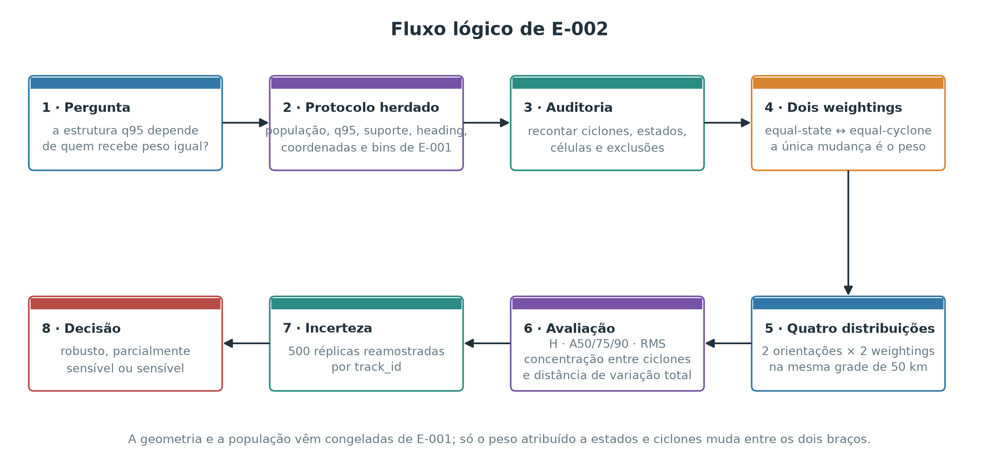
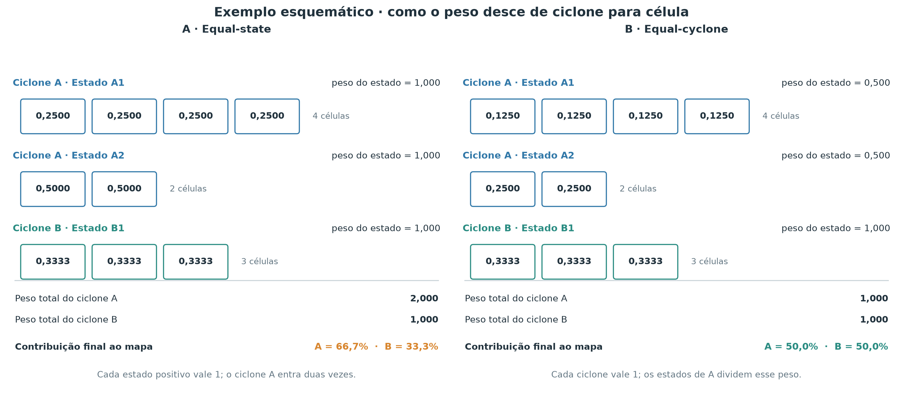
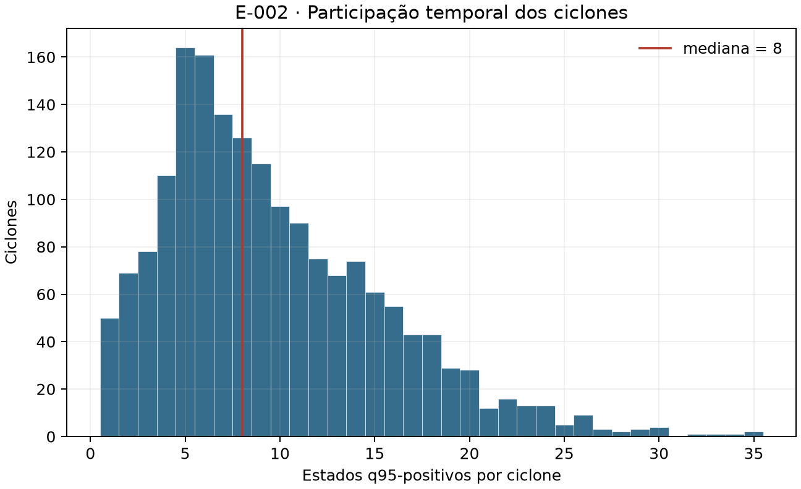
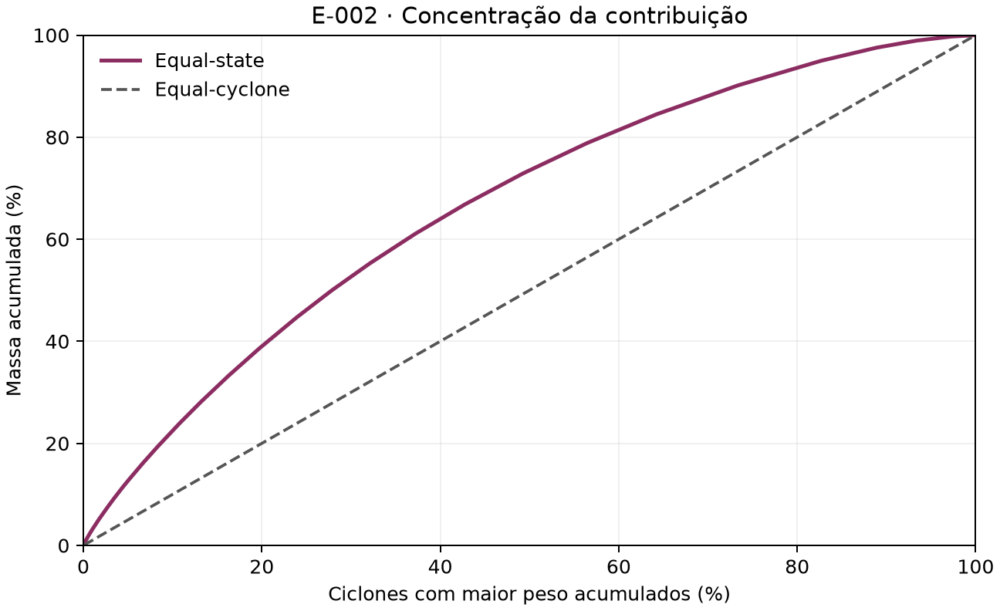
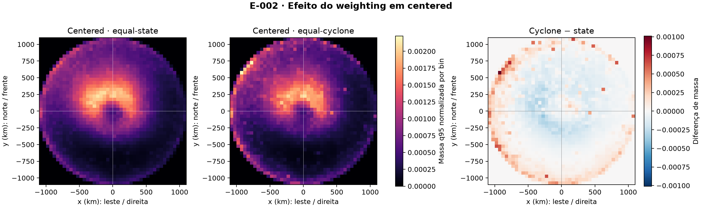
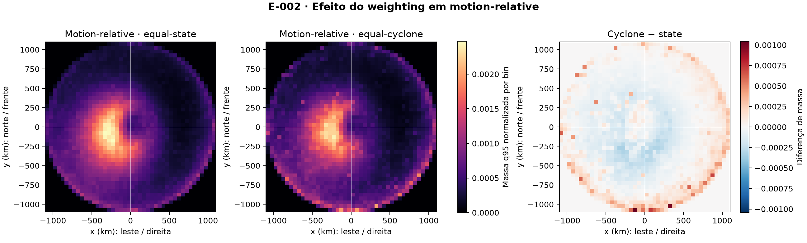
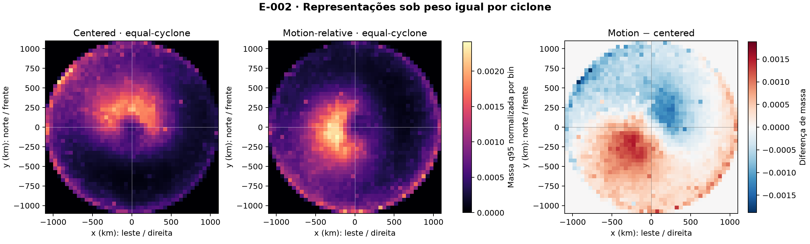
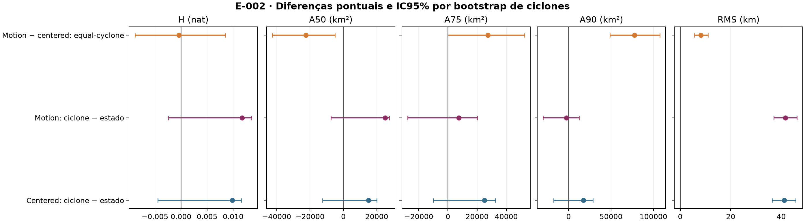

E-002 — Weighting por estado versus por ciclone
- Status:
ADOPTED— resultado classificado como ROBUSTO AO WEIGHTING. - Data de planejamento, execução e encerramento: 21 de setembro de 2026.
- Questões e decisões relacionadas: Q-007, D-005 e D-006.
- Experimento anterior: E-001 permanece historicamente
INCONCLUSIVEsob seu protocolo original.
Contexto
Um ciclone é identificado por track_id. Um estado ciclone–tempo representa esse ciclone em um campo ERA5 de 6 h. Uma célula q95-positiva é uma posição observável onde a velocidade do vento a 10 m excedeu estritamente o percentil 95 local. O conjunto dessas células num estado é um excursion set: uma realização observada de excedências, não um footprint probabilístico.
E-001 comparou quadrantes fixos (centered), nos quais o centro do ciclone é deslocado para a origem e o norte permanece para cima, com quadrantes rotacionados pelo movimento (motion-relative), que também giram o campo para colocar o deslocamento do ciclone para a frente. “Quadrantes” nomeia o sistema de referência; as coordenadas usadas nas métricas são contínuas. Cada estado q95-positivo recebeu peso normalizado total um — não massa física nem magnitude do vento. Assim, ciclones com mais estados positivos participaram mais vezes do mapa agregado.
Problema
A unidade científica fundamental do projeto é o ciclone, mas a distribuição de E-001 descreveu a população de estados. A diferença não torna E-001 incorreto: indica que dois estimandos legítimos podem responder a perguntas distintas. E-002 mede quanto a estrutura espacial e a conclusão de E-001 dependem dessa escolha, sem reinterpretar retrospectivamente seu protocolo.
Pergunta
Pergunta principal. A estrutura espacial das excedências q95 muda de forma relevante quando cada ciclone recebe o mesmo peso total, em vez de cada estado q95-positivo receber o mesmo peso?
Pergunta secundária. A conclusão INCONCLUSIVE de E-001 sobre quadrantes fixos versus rotacionados permanece quando se remove a participação proporcionalmente maior dos ciclones com muitos estados positivos?
Hipótese
A hipótese principal previa sensibilidade porque duração e número de estados q95-positivos variam entre ciclones. A hipótese de robustez previa que o conflito observado em E-001 — núcleo A50 mais concentrado, mas regiões intermediária e externa mais dispersas após a rotação — permaneceria sob peso igual por ciclone. A explicação concorrente era que poucos sistemas temporalmente longos produzissem esse conflito; nesse caso, equal-cyclone poderia alinhar as métricas em favor de uma representação.
Visão geral do desenho experimental
O fluxograma resume a cadeia lógica de E-002, da pergunta à classificação de robustez. A comparação é deliberadamente estreita: toda a geometria e toda a população vêm congeladas de E-001, e a única coisa que muda entre os dois braços é quem recebe peso igual.

Como ler o fluxo do experimento
Cada caixa corresponde a uma etapa científica, não a um script.
- Pergunta. A estrutura espacial das excedências q95 depende de o peso igual ser atribuído a estados ou a ciclones?
- Protocolo herdado. População, threshold q95 local, suporte espacial, corte de heading em 5 km/h, transformação de coordenadas, domínio, bins de 50 km, agrupamento de fases e ausência de suavização são reutilizados literalmente de E-001.
- Auditoria de reprodução. Ciclones, estados, células excedentes e exclusões são recontados. Qualquer divergência interromperia o experimento antes dos resultados.
- Dois weightings. Equal-state dá peso total um a cada estado q95-positivo; equal-cyclone dá peso total um a cada ciclone q95-positivo. Esta é a única diferença.
- Quatro distribuições. Duas orientações — quadrantes fixos e rotacionados — vezes dois weightings, todas na mesma grade.
- Avaliação. Entropia, A50, A75, A90 e RMS descrevem cada distribuição; a concentração entre ciclones e a distância de variação total descrevem o efeito do próprio weighting.
- Incerteza. Quinhentas réplicas reamostram
track_idcom reposição e recalculam ambos os weightings dentro de cada réplica. - Decisão. O critério preregistrado classifica o resultado como robusto, parcialmente sensível ou sensível ao weighting.
As seções seguintes percorrem essas etapas em detalhe, começando por por que os dois weightings não são intercambiáveis.
Por que os dois weightings respondem a perguntas diferentes
Equal-state descreve a população de estados: “se um estado q95-positivo for selecionado ao acaso, onde aparecem suas excedências?”. Um ciclone com 20 estados positivos aparece 20 vezes mais que outro com um estado positivo.
Equal-cyclone descreve a população de ciclones q95-positivos: “se um ciclone for selecionado ao acaso e sua distribuição interna for observada, qual estrutura é típica entre ciclones?”. Cada ciclone recebe massa total um, independentemente de sua duração representada.
Portanto, equal-cyclone não é automaticamente mais correto por o ciclone ser a unidade inferencial. Unidade do bootstrap e estimando descritivo cumprem funções diferentes: o bootstrap por ciclone preserva a dependência; o weighting define qual população o mapa resume.
Dados
O experimento reutilizou as três entradas de E-001, com hashes validados: catálogo operacional de tracks e lifecycle — ciclo de vida categorizado em fases — do Zenodo 18133432, catálogo de estados de 6 h e Parquet condicionado de vento ERA5 a 10 m. O período comparável vai de 1º de janeiro de 2010 a 31 de dezembro de 2020 UTC.
Suporte espacial é o conjunto de células da grade de 0,25° situadas simultaneamente no domínio 65°S–10°S, 85°W–15°W e até 1.100 km do centro. Ausência de suporte não foi convertida em não-excedência. E-002 preservou q95 local, seleção, suporte completo ou parcial, transformação azimutal equidistante, corte de heading de 5 km/h, domínio relativo de −1.100 a +1.100 km, bins de 50 km, fases agrupadas e ausência de suavização.
População reproduzida de E-001
O pipeline interromperia antes dos resultados se qualquer contagem divergisse. A validação reproduziu exatamente:
| Auditoria | Contagem |
|---|---|
| Ciclones elegíveis | 1.784 |
| Estados comparáveis | 23.050 |
| Estados com ao menos uma excedência q95 | 16.921 |
| Células q95 excedentes | 9.090.570 |
| Estados com suporte excluídos por heading < 5 km/h | 284 |
| Ciclones com ao menos um estado q95-positivo | 1.757 |
Vinte e sete ciclones elegíveis não tiveram estado q95-positivo: permaneceram na auditoria e no bootstrap da população elegível, mas não receberam massa em uma distribuição condicionada à ocorrência.
Como o peso desce de ciclone para célula
O mapa final é construído somando contribuições de milhares de estados. Antes de somar, é preciso decidir quanto cada um pode contribuir. Essa decisão não é técnica: ela define qual população o mapa descreve. Dar o mesmo peso a cada estado descreve a população de estados; dar o mesmo peso a cada ciclone descreve a população de ciclones. E-002 constrói as duas e compara.
- células q95 de cada estado, já posicionadas em bins de 50 km pela geometria de E-001
- atribuição de peso total a estados ou a ciclones, e repartição desse peso entre as células
- duas distribuições espaciais normalizadas sobre a mesma grade, uma por weighting
O peso percorre quatro níveis encadeados, sempre de cima para baixo:
ciclone (
track_id) → estado ciclone–tempo → célula q95 → bin de 50 km
Neste relatório, massa é usada como sinônimo abreviado de peso normalizado de ocorrências: não é massa física nem magnitude do vento. A diferença entre os dois esquemas está inteiramente em qual nível recebe uma unidade de peso: o estado ou o ciclone.
Sejam, em todo o restante da seção:
j— índice do ciclone;t— índice de um estado q95-positivo do ciclonej;m_jt— número de células excedentes no estadotdo ciclonej, adimensional, comm_jt ≥ 1;n_j— número de estados q95-positivos do ciclonej, adimensional, comn_j ≥ 1.
Posições têm unidade de quilômetro e áreas têm km², mas pesos e proporções espaciais são adimensionais.
Equal-state
O que entra. Os estados q95-positivos, cada um com suas m_jt células.
O que queremos obter. Um peso por célula tal que cada estado contribua com exatamente uma unidade.
Como é calculado. O estado recebe uma unidade de peso e a divide igualmente entre suas células excedentes. Em equal-state, cada célula recebe peso
Aqui, é o peso adimensional de uma célula excedente. As células de cada estado somam uma unidade de peso; a soma dos bins é depois normalizada para um.
Em outras palavras, o número de células excedentes controla apenas o detalhe com que o peso do estado se espalha, nunca o total que ele contribui. Um estado que cobriu uma área enorme e outro que cobriu poucos pixels entram no mapa com a mesma importância. O que ainda não é neutralizado é a duração: um ciclone com muitos estados positivos entra muitas vezes.
O que sai. Um peso por célula; o peso total de cada ciclone j fica igual a n_j.
Equal-cyclone
O que entra. Os mesmos estados e as mesmas células, mais a contagem n_j de estados positivos por ciclone.
O que queremos obter. Um peso por célula tal que cada ciclone contribua com exatamente uma unidade, independentemente de quantos estados positivos tenha.
Como é calculado. O ciclone recebe uma unidade, reparte-a igualmente entre seus n_j estados positivos, e cada estado reparte a sua parte entre suas células. Se é o número adimensional de estados q95-positivos do ciclone , cada célula recebe
As células de cada estado somam , e todos os estados do ciclone somam uma unidade. A distribuição agregada é normalizada entre os 1.757 ciclones q95-positivos. Dentro de cada fase, conta apenas estados positivos daquela fase; assim, a análise estratificada também compara ciclones com peso total igual no estrato.
A fórmula é a de equal-state dividida por n_j. Esse único fator é toda a diferença entre os dois experimentos: ele remove a vantagem de participação que um ciclone longo tinha por aparecer muitas vezes.
O que sai. Um peso por célula; o peso total de cada ciclone é um, por construção.
Exemplo concreto: a mesma população sob os dois weightings
Considere uma população reduzida a dois ciclones:
- Ciclone A — estado
A1com 4 células q95 e estadoA2com 2 células q95, portanton_A = 2; - Ciclone B — estado
B1com 3 células q95, portanton_B = 1.
Sob equal-state, cada estado vale um. As células de A1 recebem 1/4 = 0,25; as de A2 recebem 1/2 = 0,50; as de B1 recebem 1/3 ≈ 0,3333. Os pesos totais ficam A = 1 + 1 = 2 e B = 1. Sobre o total de 3, o ciclone A contribui com 66,7% do mapa e o ciclone B com 33,3%.
Sob equal-cyclone, cada ciclone vale um. Os dois estados de A dividem essa unidade, então A1 vale 1/2 e A2 vale 1/2; suas células recebem 0,5/4 = 0,125 e 0,5/2 = 0,25. O ciclone B tem um único estado positivo, que continua valendo um, com células de 1/3 ≈ 0,3333. Os pesos totais ficam A = 1 e B = 1, e cada ciclone contribui com 50% do mapa.
Verificação: em ambos os esquemas, as células de um mesmo estado somam o peso daquele estado, e os pesos dos estados somam o peso do ciclone. Só a repartição entre ciclones muda.

O exemplo mostra o mecanismo, não a magnitude. Na amostra real, nenhum ciclone isolado chega perto de 66,7%: o maior recebe 0,21% da massa equal-state. O efeito observado é agregado — os 10% de ciclones com mais estados positivos reúnem 22,52% da massa —, e é essa concentração agregada, não um evento dominante, que E-002 mede.
Diagnóstico de contribuição dos ciclones
Para cada track_id, o produto reprodutível registra estados elegíveis, estados q95-positivos, duração representada em blocos de 6 h, intervalo entre primeiro e último estado e fração de massa nos dois weightings. A duração de observação é o número de estados multiplicado por 6 h; o intervalo temporal também é fornecido porque uma sequência pode conter lacunas de elegibilidade.
Entre os ciclones positivos, a mediana foi 8 estados; P25 = 5, P75 = 13, P90 = 18, P95 = 20, P99 = 26 e o máximo = 35. O ciclone de maior peso recebeu 0,2068% da massa equal-state, contra 0,0569% sob peso igual.
| Grupo ordenado por contribuição equal-state | Ciclones | Massa equal-state | Massa equal-cyclone |
|---|---|---|---|
| 1% superior | 18 | 3,19% | 1,02% |
| 5% superior | 88 | 12,69% | 5,01% |
| 10% superior | 176 | 22,52% | 10,02% |
O índice de Herfindahl é , onde é a fração adimensional da massa global do ciclone e . O número efetivo informa quantos ciclones igualmente ponderados produziriam a mesma concentração. Equal-state teve HHI = 0,0007759 e ; equal-cyclone, HHI = 0,0005692 e , seu valor teórico. Para os grupos superiores, 1%, 5% e 10% foram convertidos em número de ciclones pelo teto, resultando em 18, 88 e 176 eventos.
A figura pergunta se poucos ciclones dominam pela quantidade de estados positivos. O eixo horizontal mostra estados por ciclone; o vertical, número de ciclones, e a linha marca a mediana.

Observação: a distribuição é assimétrica, mas o maior ciclone isolado responde por apenas 0,21% da massa. Interpretação: há concentração agregada relevante, não domínio por um único evento. Limitação: número de estados positivos combina duração, seleção, suporte e ocorrência; não mede duração física completa do ciclone.
A próxima figura ordena os ciclones do maior para o menor peso. O eixo horizontal acumula a fração de ciclones e o vertical acumula a massa; a diagonal é o resultado equal-cyclone.

Observação: os 10% superiores concentram 22,52% da massa equal-state. Interpretação: cai 26,6% em relação aos 1.757 ciclones positivos, uma desigualdade material, porém distribuída. Limitação: a curva mede contribuição, não influência causal de cada ciclone sobre uma métrica específica.
Métricas
As definições são idênticas às de E-001, incluindo o que cada métrica não mede; o tratamento completo de cada uma está em métodos de avaliação e métricas de E-001. A entropia de Shannon , em nat, resume quão espalhada está a massa entre bins; identifica um bin e é sua massa adimensional normalizada, com . A50, A75 e A90 são o número mínimo de bins necessários para atingir 50%, 75% e 90% da massa multiplicado por 2.500 km². RMS é a raiz da distância quadrática média ao centroide, em km. A distância do centroide ao centro, em km, e a razão entre eixos principais da covariância, adimensional, são diagnósticos de deslocamento e anisotropia; não entram na decisão principal.
Essas métricas descrevem cada distribuição isoladamente. E-002 precisa também de uma medida do quanto o próprio weighting mudou o mapa.
Distância de variação total
Pergunta que responde. Quanto de peso teria de ser movido de um bin para outro para transformar o mapa equal-state no mapa equal-cyclone?
Intuição. Se os dois mapas fossem idênticos, nada precisaria ser movido. Quanto mais eles discordarem sobre onde o peso está, maior a fração que precisaria mudar de lugar.
Cálculo. Somam-se as diferenças bin a bin, em valor absoluto, e divide-se por dois — cada unidade movida aparece duas vezes na soma, uma vez como perda e outra como ganho. A distância de variação total entre os mapas dos dois weightings é
onde identifica um bin de 50 km e cada é sua massa adimensional normalizada.
Interpretação. TV varia de 0 a 1: zero representa mapas idênticos; o valor também é a fração mínima de massa que precisaria ser redistribuída para igualá-los. Um TV de 0,08 significa que cerca de 8% do peso está em bins diferentes nos dois mapas, enquanto 92% coincide.
O que não mede. TV não diz para onde a massa se moveu, não distingue um deslocamento curto de um deslocamento longo — mover peso para o bin vizinho e para o outro extremo do domínio contam igual — e não ordena qualidade científica: um TV alto não torna um weighting melhor nem pior que o outro.
Critério de decisão
O critério foi registrado no protocolo antes da execução. E-001 seria robusto ao weighting se, sob equal-cyclone, A50 continuasse em sentido oposto a A75, A90 e RMS e as cinco métricas de concentração não favorecessem consistentemente uma representação. Seria sensível se todas as cinco passassem a apontar para a mesma representação, com IC95% de H e A75 excluindo zero no mesmo sentido, ou se o critério simétrico de E-001 sustentasse claramente uma representação. Situações intermediárias seriam parcialmente sensíveis.
Como o critério opera. Ele não pergunta se o weighting mudou alguma coisa — quase certamente mudou —, mas se a mudança foi suficiente para reverter a leitura de E-001. Se, sob equal-cyclone, o conflito entre núcleo e cauda persistir e nenhuma representação reunir todas as métricas a seu favor, o experimento é classificado como ROBUST_TO_WEIGHTING. Se as cinco métricas passarem a apontar no mesmo sentido, com os intervalos de H e A75 excluindo zero coerentemente, o experimento é classificado como sensível e a conclusão de E-001 teria de ser reaberta. Qualquer padrão intermediário — por exemplo, quatro métricas concordando e uma discordando — seria PARTIALLY_SENSITIVE.
Esse critério avalia a conclusão sobre orientação; ele não exige que todos os efeitos do weighting sejam numericamente pequenos. Um weighting pode deslocar muito peso e ainda assim preservar a comparação entre orientações, e é exatamente essa distinção que o critério isola.
Resultados
As quatro distribuições principais produziram:
| Representação | Weighting | H (nat) | A50 (km²) | A75 (km²) | A90 (km²) | RMS (km) | Distância do centroide (km) | Anisotropia |
|---|---|---|---|---|---|---|---|---|
| Centered | Equal-state | 7,11505 | 967.500 | 1.817.500 | 2.660.000 | 672,06 | 219,92 | 1,0375 |
| Centered | Equal-cyclone | 7,12489 | 982.500 | 1.842.500 | 2.677.500 | 713,22 | 220,14 | 1,0102 |
| Motion-relative | Equal-state | 7,11276 | 935.000 | 1.862.500 | 2.757.500 | 679,75 | 194,58 | 1,0224 |
| Motion-relative | Equal-cyclone | 7,12448 | 960.000 | 1.870.000 | 2.755.000 | 721,43 | 190,56 | 1,0360 |
As duas linhas equal-state reproduziram as áreas de E-001 exatamente e as métricas contínuas com diferença absoluta inferior a ; os resumos bootstrap de E-001 também foram reproduzidos dentro de .
Efeito do weighting
Diferenças abaixo são equal-cyclone minus equal-state. Valores positivos de H, área ou RMS representam maior dispersão sob peso igual por ciclone.
| Representação | ΔH (nat) | ΔA50 (km²) | ΔA75 (km²) | ΔA90 (km²) | ΔRMS (km) | TV |
|---|---|---|---|---|---|---|
| Centered | +0,00983 | +15.000 | +25.000 | +17.500 | +41,16 | 0,07920 |
| Motion-relative | +0,01171 | +25.000 | +7.500 | −2.500 | +41,68 | 0,07858 |
O mapa centered abaixo compara os dois estimandos na mesma escala; o terceiro painel é equal-cyclone minus equal-state.

Observação: 7,92% da massa precisa ser redistribuída entre bins e o RMS aumenta 41,16 km. Interpretação: ciclones com menos estados positivos ampliam a dispersão radial média quando recebem peso igual. Limitação: o mapa agregado não identifica quais ciclones geram cada deslocamento.
O mapa motion-relative usa direita/frente como eixos e mantém a mesma leitura.

Observação: a magnitude global da redistribuição é quase igual à de centered, embora A90 diminua 2.500 km². Interpretação: a sensibilidade ao weighting não depende apenas da orientação. Limitação: TV não informa se uma redistribuição é fisicamente preferível.
Robustez da conclusão de E-001
A comparação motion-relative minus centered foi:
| Weighting | ΔH (nat) | ΔA50 (km²) | ΔA75 (km²) | ΔA90 (km²) | ΔRMS (km) |
|---|---|---|---|---|---|
| Equal-state | −0,00229 | −32.500 | +45.000 | +97.500 | +7,69 |
| Equal-cyclone | −0,00041 | −22.500 | +27.500 | +77.500 | +8,21 |

Observação: o conflito núcleo–cauda permanece, embora as diferenças de área diminuam. Interpretação: a conclusão de E-001 não foi produzida pela participação desproporcional dos ciclones mais longos. Limitação: robustez a este weighting não implica robustez a thresholds, tamanho do ciclone ou novas amostras.
Resultado por fase
A tabela mostra equal-cyclone minus equal-state dentro das quatro fases principais; valores de H, áreas e RMS têm as mesmas unidades da análise global.
| Fase | Representação | ΔH | ΔA50 | ΔA75 | ΔA90 | ΔRMS |
|---|---|---|---|---|---|---|
| Incipiente | Centered | −0,01133 | −32.500 | −10.000 | −5.000 | +12,90 |
| Incipiente | Motion-relative | −0,00744 | −17.500 | −12.500 | −7.500 | +14,08 |
| Intensificação | Centered | +0,02391 | +32.500 | +55.000 | +50.000 | +35,62 |
| Intensificação | Motion-relative | +0,03036 | +47.500 | +60.000 | +62.500 | +37,97 |
| Madura | Centered | +0,00294 | −7.500 | +17.500 | +32.500 | +13,51 |
| Madura | Motion-relative | −0,00724 | −12.500 | +5.000 | +20.000 | +12,19 |
| Decaimento | Centered | −0,02905 | −57.500 | −80.000 | −65.000 | +26,25 |
| Decaimento | Motion-relative | −0,02137 | −37.500 | −95.000 | −92.500 | +28,03 |
O equal-state foi 767,3 de 1.051 ciclones positivos na fase incipiente, 1.132,9 de 1.611 na intensificação, 735,8 de 923 na madura e 873,3 de 1.296 no decaimento. A perda relativa foi maior no decaimento, seguido de intensificação. O efeito espacial não foi homogêneo: peso igual aumentou áreas na intensificação, reduziu-as no decaimento e produziu sinais mistos na fase madura. Como esta estratificação é secundária e não recebeu bootstrap próprio, ela localiza heterogeneidade, mas não domina a conclusão global.
Incerteza
As diferenças acima são um número só. Falta saber se elas sobreviveriam a outra seleção de ciclones ou se dependem de quais eventos entraram na amostra. O bootstrap responde reconstruindo a amostra muitas vezes e observando quanto cada diferença varia.
- os 1.784 ciclones elegíveis, cada um com todos os seus estados e células
- 500 reamostragens com reposição no nível do ciclone, recalculando os dois weightings dentro de cada réplica
- uma distribuição de 500 diferenças por contraste, resumida pelos percentis 2,5 e 97,5
Qual é a unidade de reamostragem. O sorteio é feito sobre track_id. Com uma população reduzida a C1 C2 C3 C4, uma réplica poderia ser C2 C2 C4 C1: C3 fica de fora e C2 conta em dobro, sempre com todos os seus estados e células juntos. O esquema completo está ilustrado em E-001.
Por que não reamostrar estados nem células. Estados sucessivos do mesmo ciclone descrevem o mesmo sistema em instantes próximos, e células vizinhas pertencem ao mesmo campo de vento. Tratá-los como observações independentes produziria intervalos artificialmente estreitos. Em E-002 há um motivo adicional: n_j, o número de estados positivos do ciclone, é justamente a quantidade que distingue os dois weightings. Reamostrar estados alteraria n_j e destruiria o contraste sob teste.
Por que os dois weightings são recalculados na mesma réplica. Dentro de cada réplica, a mesma população sorteada alimenta equal-state e equal-cyclone, de modo que a variação observada reflete a troca de ciclones e não uma diferença de amostra entre os dois braços.
Foram geradas 500 réplicas com semente 20260921. Em cada uma, os 1.784 ciclones elegíveis foram reamostrados com reposição; todos os estados e células de cada seleção foram preservados, e ambos os weightings foram recalculados. A tabela apresenta estimativa observada e IC95% percentil.
| Contraste | Métrica | Estimativa | IC95% |
|---|---|---|---|
| Centered: ciclone − estado | H | +0,00983 | [−0,00444; +0,01156] |
| A50 | +15.000 | [−12.500; +20.000] | |
| A75 | +25.000 | [−10.000; +32.500] | |
| A90 | +17.500 | [−17.500; +28.812] | |
| RMS | +41,16 | [+36,36; +45,80] | |
| Motion: ciclone − estado | H | +0,01171 | [−0,00239; +0,01356] |
| A50 | +25.000 | [−7.500; +27.500] | |
| A75 | +7.500 | [−27.500; +20.000] | |
| A90 | −2.500 | [−30.000; +12.500] | |
| RMS | +41,68 | [+37,14; +46,27] | |
| Motion − centered: equal-cyclone | H | −0,00041 | [−0,00883; +0,00847] |
| A50 | −22.500 | [−42.500; −5.000] | |
| A75 | +27.500 | [0; +52.500] | |
| A90 | +77.500 | [+48.688; +107.500] | |
| RMS | +8,21 | [+5,57; +11,07] |

Observação: os IC das áreas e de H para o efeito do weighting incluem zero, mas o aumento de RMS é consistente nas duas representações. Sob equal-cyclone, A50 favorece motion-relative, enquanto A90 e RMS favorecem centered; H inclui zero e A75 toca zero. Interpretação: há evidência de maior dispersão radial entre ciclones igualmente ponderados, mas não de uma mudança coerente em todas as medidas de concentração. Limitação: o bootstrap quantifica incerteza interna deste experimento; não substitui análise de influência, remoção de ciclones ou validação fora da amostra.
Em resumo: o que este método faz?
E-002 congela tudo o que E-001 fixou — população, threshold, suporte, geometria e bins — e mexe em um único parâmetro: quem recebe uma unidade de peso. Sob equal-state, cada estado com excedência vale um, de modo que ciclones com muitos estados participam muitas vezes. Sob equal-cyclone, cada ciclone vale um e reparte esse valor entre seus próprios estados. As duas escolhas produzem mapas espaciais diferentes sobre exatamente a mesma grade. Comparando as métricas de concentração entre os dois mapas, o experimento mede quanto da estrutura observada em E-001 vinha da participação desigual dos ciclones mais longos; comparando as orientações dentro de cada weighting, verifica se a conclusão de E-001 depende dessa escolha.
Interpretação
O esquema equal-state não foi dominado por um ciclone ou por um grupo minúsculo, mas deu influência agregada material aos sistemas com mais estados positivos: os 10% superiores receberam 22,52% da massa, e caiu de 1.757 para 1.288,8. Remover essa desigualdade deslocou cerca de 8% da massa espacial e aumentou RMS em aproximadamente 41 km.
Essas mudanças quantitativas não alteraram a narrativa de orientação. Sob ambos os estimandos, motion-relative concentra A50 e dispersa A75, A90 e RMS em relação a centered. E-002 é, portanto, ROBUSTO AO WEIGHTING segundo o critério registrado.
Limitações
- q95 permaneceu fixo; q90, q99 e thresholds físicos não foram testados.
- O produto de vento é um recorte condicionado de 2010–2020 e não uma climatologia completa.
- Duração representada não é duração física completa e também depende de suporte, heading e ocorrência q95.
- Fases foram analisadas como fornecidas e agrupadas segundo E-001; não se controlou intensidade.
- Não houve remoção de ciclones influentes, leave-one-cyclone-out nem validação em grupos não usados na construção.
- A análise compara distribuições condicionadas à ocorrência; não estima coverage probability, magnitude condicional, footprint probabilístico ou hazard geográfico.
Conclusão
O weighting altera de forma mensurável a distribuição — TV próxima de 0,079 e RMS cerca de 41 km maior sob peso igual por ciclone — mas não muda qualitativamente a comparação entre orientações. A conclusão de E-001 permanece INCONCLUSIVE sob seu protocolo original e mostrou-se ROBUSTA AO WEIGHTING em E-002.
Consequência para o projeto
Nenhum weighting foi eleito universalmente principal. Conforme D-006, equal-state deve ser usado quando a pergunta-alvo é sobre a população de estados q95-positivos; equal-cyclone, quando a pergunta é sobre a população de ciclones q95-positivos. O estimando deve ser declarado e o outro weighting deve permanecer como análise de sensibilidade quando pertinente.
Também não foi adotada uma orientação espacial superior. O próximo teste independente é a sensibilidade ao threshold; lifecycle versus intensidade, estabilidade e generalização por ciclone e o modelo probabilístico completo permanecem futuros.
Reprodutibilidade
O protocolo congelado está em scripts/04_e002_weighting/protocol.json; o código e os testes, em scripts/04_e002_weighting/; e os produtos, em outputs/04_e002_weighting/. summary.json registra hashes das entradas, protocolo, script e resumo de E-001, além da semente. cyclone_contributions.csv, metrics.csv, metric_comparisons.csv, bootstrap_differences.csv, spatial_distributions.csv e contribution_concentration_by_phase.csv preservam os resultados tabulares. A sequência de execução está em proveniência e reprodutibilidade.
Respostas finais de E-002
- Ciclones com muitos estados dominavam materialmente E-001? Havia desigualdade material agregada, mas não domínio por poucos eventos: os 10% superiores reuniam 22,52% da massa, o maior ciclone apenas 0,21%, e entre 1.757 ciclones positivos.
- Dar peso igual a cada ciclone altera de forma cientificamente relevante a estrutura? Sim, de forma moderada: cerca de 8% da massa foi redistribuída e RMS aumentou aproximadamente 41 km. A maior parte dos IC para H e áreas inclui zero, portanto a mudança não é coerente em todas as métricas.
- A conclusão de E-001 permanece robusta? Sim. O conflito entre núcleo e cauda permanece e nenhuma orientação se torna consistentemente superior.